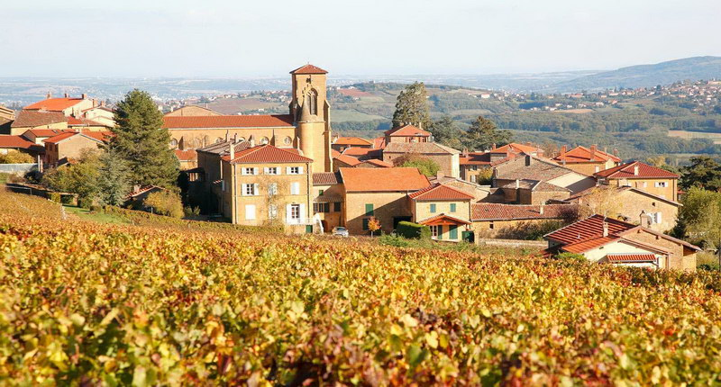

Виктория Пройя
ЧАСТНЫЙ ГИД
Ваш отдых со мной подарит вам яркие впечатления и весёлые приключения!
Ваш отдых - моя работа
Предложения для вас — это отдых с удивительными открытиями, весельем и комфортом.
Для тех, кто любит путешевствовать и учить языки, мои услуги станут наиболее привлекательными.
Имея в кармане диплом педагога английского и французского языка и огромное желание с вами работать, я предложу вам любопытный подход в знакомстве с Францией.
Вместе интересней изучать европейскую культуру и языки через призму французского Savoir-Vivre, что значит "искусство жить".
Время вашего путешествия станет частью моей жизни, общение со мной обогатит ваши знания о Европе и снимет языковые барьеры, если таковые имеются. Чем больше я путешествую по Европе, тем больше убеждаюсь, что границы только в нашем воображении. Знания невозможно ограничить или ими ограничиться, можно лишь научиться им пользоваться!
Мой девиз:
качество
надежность
профессионализм
Проложить маршрут по сезону и по интересам - это хлопотное занятие. Оптимистично использовать драгоценное время, позволить увидеть в лучшем свете другую культуру и попробовать всё то, о чём так много говорят и пишут, всё это непосредственно моя задача организатора вашего отдыха.
Ответственное планирование и его реализация - это и есть суть моей работы. Услуги не ограничатся заказом дегустаций и рассказом о достопримечательностях. Вместе мы подберём отель и проложим маршрут по наиболее интересующим вас местам.
Предложенные на данном сайте программы являются лишь примером тех, что уже проводились, и они могут послужить опорой для вашего предполагаемого тура.
Основными моими предложениями являются автомобильные и пешеходные экскурсии, а так же организация и проведение интересного отдыха во французских провинциях по темам: история, искусство, архитектура, религия, гастрономия и вино.
В сотрудничестве с аккредитованными школами французского языка я могу предложить вам обучение в них или же занятия индивидуально. Уроки проводятся в удобное для вас время, остальное можно посвятить знакомству с Францией. Возможно устроить экскурсию и урок языка одновременно, так как сама я преподаю французский язык. Имея опыт проведения тура и урока, я могу адаптироваться на ваш уровень языка и в позновательной экскурсии организовать ваше путешествие. Ни одна деталь не остается без внимания, ваши мечты и пожелания воплотятся в жизнь.
Ваши приключения со мной подарят вам яркие впечатления и весёлые эмоции, наше путешествие изменит ваш взгляд на французские особенности и самобытный стиль жизни.
Эксклюзивность туров в индивидуальном подходе: продуманный маршрут, визиты в престижные винные дома с дегустациями вин и посещения гастрономических ателье: сыроварни, шоколадные производства, трюфельные фермы, полёты на частных самолетах, прогулки на лошадях, пешеходные или велосипедные променады и т.д на ваш выбор.
Отдых на все сто получается, когда им занимается профессионал.
Поподробнее